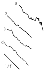
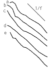

| Many electronic devices are known to exhibit 1/f noise. |
| As a graduate student at Berkeley, Richard Voss was studying this problem, using
signal-processing equipment and computers to produce the
power spectrum of the signal from a semiconductor sample. |
| When one sample had burned
out and another was being prepared, Voss plugged his signal-analyzing equipment
into a radio and computed the power spectrum. |
| Amazingly, a 1/f spectrum appeared. |
| Voss changed radio stations and repeated the experiment - another 1/f distribution. |
| Classical, jazz, blues, and rock all exhibited 1/f distributions. |
| Even radio news
and talk shows gave (approximate) 1/f distributions. |
| These results are reported in
Voss and Clarke. |
| Here are two sets of examples. Click the pictures for details. |
| Many examples of Western music - meaning music of Europe and North America,
not cowboy music - exhibit 1/f behavior. |
 |
|
| Music from several cultures - African, Japanese, Indian, and Russian -
and a range of times - Medieval through the Beatles - exhibit 1/f behavior. |
 |
|
|
| Voss uses these observations eloquently to bring closure to one of
the classical Greek
theories of art. |
| The Greeks believed art imitates nature, and how this happens
is relatively clear for painting, sculpture, and drama. |
| Music, though, was a puzzle. |
| Except for rare phenomena such as aeolian harps, few processes in Nature seem musical. |
| Voss uses the ubiquity of
1/f noise to assert music mimics the way the world changes with time. |
| To emphasize
how this is a time fractal, we mention that the correlation of a note with the previous
ten notes is the same as the correlation with the previous 100 notes, and is the same
as the correlation with the previous 1000 notes, ... . There is a self-similarity of
the correlations. |